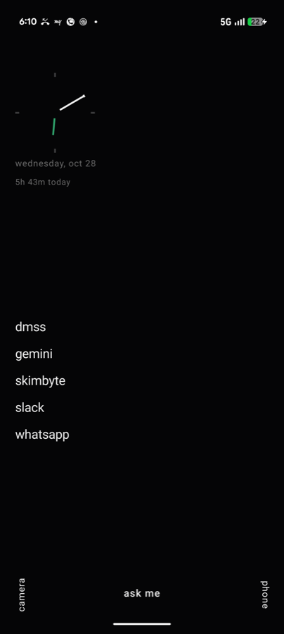
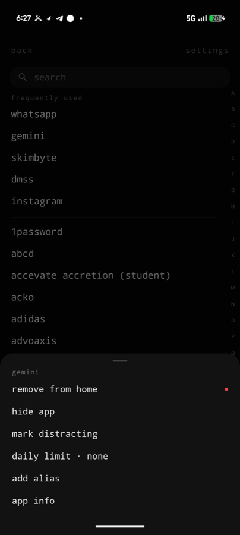
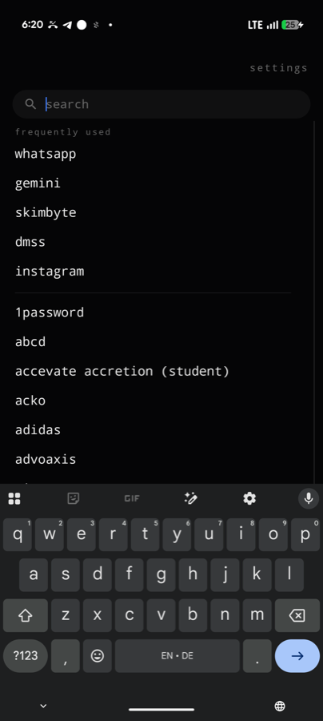
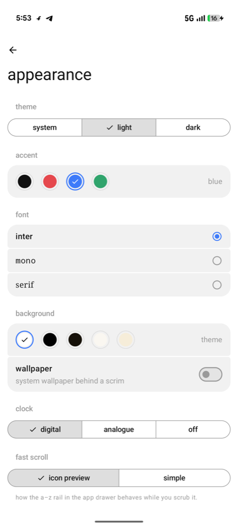
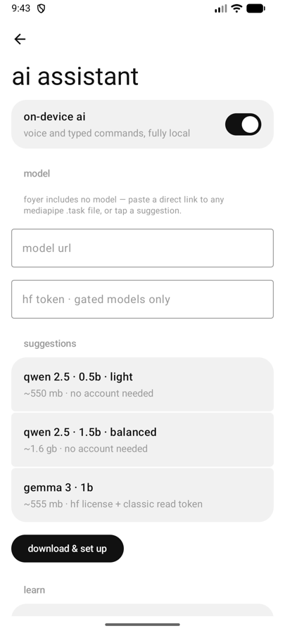
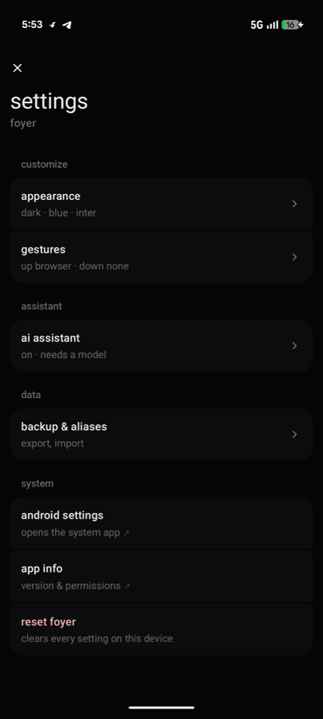

7:48
wednesday, oct 28
1h 25m today
search spot
hidden apps stay hidden · search sees everything
on-device · private
Plain text instead of an icon grid, and an assistant that runs entirely on the phone. No server, no account, no analytics — airplane mode changes nothing.
parsed the same way the app parses a model reply — structured actions, never raw intents.

The first thing the home screen tells you is how long you've been on the phone today. Not an app you open — just quietly there.

Give instagram twenty minutes a day. When they're spent, foyer pauses the launch and asks. One conscious tap buys five more.
A notification nudges you when the budget runs out mid-scroll.

The drawer is a text list with an A–Z rail. Search opens the keyboard by itself; aliases you teach ("insta") rank first.

Three fonts, four accents, five background tones, true black to cream. Every pairing keeps its contrast; there is no wallpaper circus.

Foyer ships no model. Paste a MediaPipe .task link or tap a suggestion. Qwen 2.5 downloads with no account at all, and runs locally, forever.
I built foyer because my home screen had become a casino floor: forty coloured icons, each engineered to be tapped. I wanted the room you pass through on the way out, not the room you get stuck in.
Then the assistant question came up, and every answer on the market was a microphone wired to someone's server. That felt wrong for the most personal screen you own. So foyer's assistant is a small open model that lives entirely on your phone — you download it once, from whoever you trust, and nothing you say ever leaves the device.
The whole launcher is GPL-3.0 on GitHub. Read every line; that's the point.
akshay sharma
maker of foyer

Free, open source, and yours to read. Install the app, pick a model, and give your phone a quieter front room.
get it on github